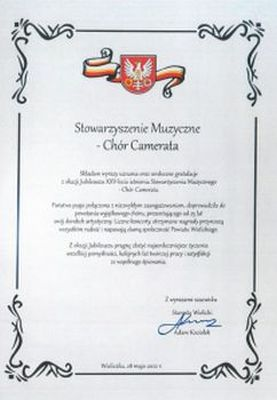
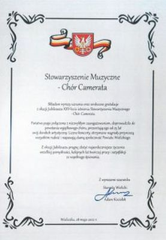
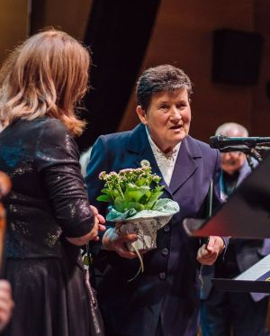
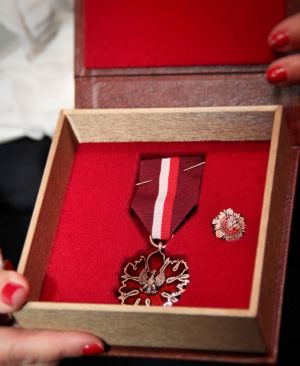

A tymczasem w Cameracie...
.
2022-05-28
"Dla Małopolski od 25 lat"28 maja 2022 r. miała miejsce Gala Jubileuszowa wielickiego chóru Camerata, działającego pod patronatem Wielickiego Centrum Kultury.
Patronat Honorowy nad wydarzeniem objął Witold Kozłowski – Marszałek Województwa Małopolskiego.
Wśród znakomitych gości obecni byli:
Urszula Rusecka – Poseł na Sejm RP,
Henryk Gawor – Wicestarosta Wielicki,
 
Tadeusz Lubraniec – Przewodniczący Rady Miejskiej w Wieliczce,
Magdalena Kot – Dyrektor Wielickiego Centrum Kultury,

Ks. Wojciech Olszowski – Proboszcz Parafii Św. Klemensa w Wieliczce,a także przedstawiciele zespołów działających na terenie Gminy Wieliczka oraz sympatycy chóru. Uroczysta oprawa godna srebrnego Jubileuszu możliwa była dzięki wsparciu finansowemu Województwa Małopolskiego, Powiatu Wielickiego, Gminy Wieliczka, Wielickiego Centrum Kultury, Firmy Regis oraz Małopolskiego Banku Spółdzielczego.
Podczas uroczystości w imieniu Ministra Kultury i Dziedzictwa Narodowego prof. dra hab. Piotra Glińskiego, Poseł RP Urszula Rusecka uhonorowała Izabelę Szota Brązowym Medalem
"Zasłużony Kulturze Gloria Artis",

a Annę Klimczyk – Odznaką
„Zasłużony dla Kultury Polskiej”.
Wyrazy uznania dla chóru za długoletnią działalność kulturalną złożyli:Adam Kociołek – Starosta Wielicki,
Henryk Gawor – Wicestarosta Wielicki,
w imieniu Artura Kozioła, Burmistrza Wieliczki:
Piotr Krupa - Zastępca Burmistrza ds. Inwestycji, Tadeusz Lubraniec - Przewodniczący Rady Miejskiej w Wieliczce.
Małgorzata Krasoń - Przewodnicząca Komisji Oświaty oraz
Magdalena Kot - Dyrektor Wielickiego Centrum Kultury.
Tegoroczne obchody jubileuszu Camerata rozpoczęła już w styczniu, organizując XV Wielicki Wieczór Kolęd.
W marcu w Kościele Św. Klemensa w Wieliczce miał miejsce koncert z repertuarem sacrum, będący podziękowaniem za 25 lat wspólnego śpiewania i modlitwą o pokój.
W kwietniu, pod Honorowym Patronatem Witolda Kozłowskiego – Marszałka Województwa Małopolskiego, przy wsparciu Województwa Małopolskiego, Camerata udała się Szlakiem ucieczki z Auschwitz Rtm. Witolda Pileckiego, śpiewając koncerty w Alwerni, Tyńcu i Nowym Wiśniczu.
Na początku maja przy wsparciu Artura Kozioła - Burmistrza Wieliczki chórzyści odbyli tournee koncertowe do Włoch, podążając odcinkiem Adriatyckim szlaku II Korpusu gen. Władysława Andersa.
Jubileuszowa Gala była niezwykle różnorodna, a powtarzając za Ewą Roeske-Tracz, autorką licznych tekstów o Cameracie, „piękna melodia zapraszała wszystkich w tan”. Bo też wszystkie utwory miały taneczny charakter. Na początek zabrzmiały narodowe tańce polskie (polonez, krakowiak, mazur, kujawiak), a następnie walc, czardasz, bolero, cha-cha, tańce żydowskie, tango i polka. Nie zabrakło również wspólnego tańca z publicznością w rytmie walca i twista pod przewodnictwem Kazimierza Nowaka.

Katarzyna Puch (sopran),
Konrad Szota (baryton),
Aleksandra Szota-Prószyńska (skrzypce),
Małgorzata Żegleń-Włodarczyk (gitara),
Jacek Bylica (fortepian).

To wszystko sprawiło, że w podziękowaniu za przepiękną uroczystość i wspaniałą atmosferę publiczność nagrodziła wykonawców owacjami na stojąco, bo przecież cytując Ewę Roeske-Tracz „być z sobą tyle lat i śpiewem bawić świat, to najpiękniejsza w życiu rzecz”. Spotkanie zakończyło wręczenie podziękowań dla osób, które śpiewają w chórze od samego początku jego istnienia. Były także gratulacje - tym razem od:
przedstawicieli Gminnej Rady Seniorów, Uniwersytetu Trzeciego Wieku,
Tekst Izabela Szota

© Stowarzyszenie Muzyczne Chór Camerata Wieliczka
Prowadzenie strony oraz zdjęcia: Małgorzata Wysocka